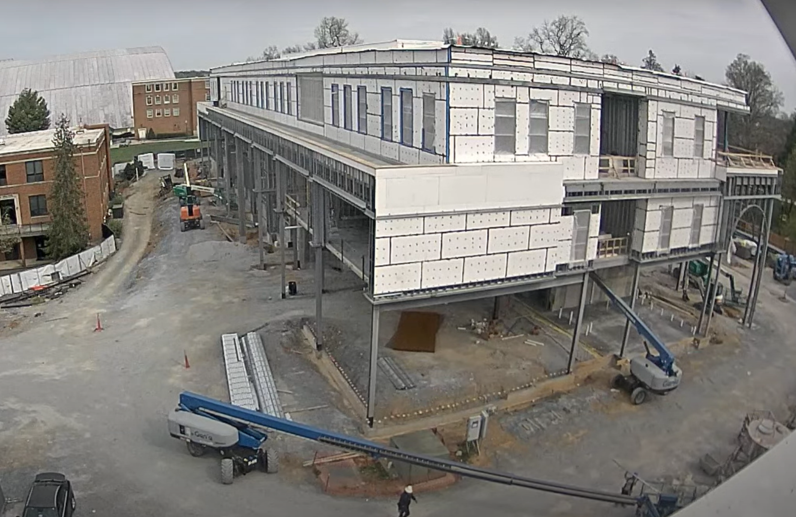
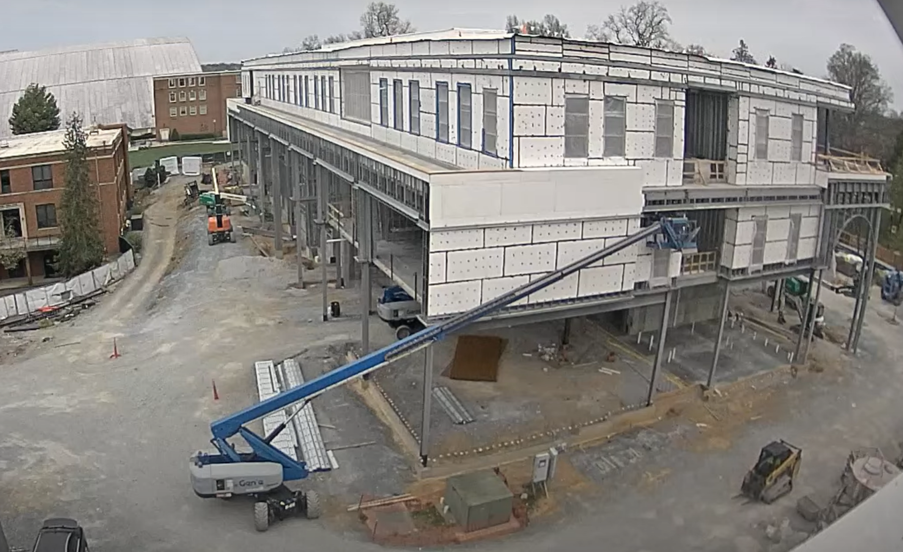
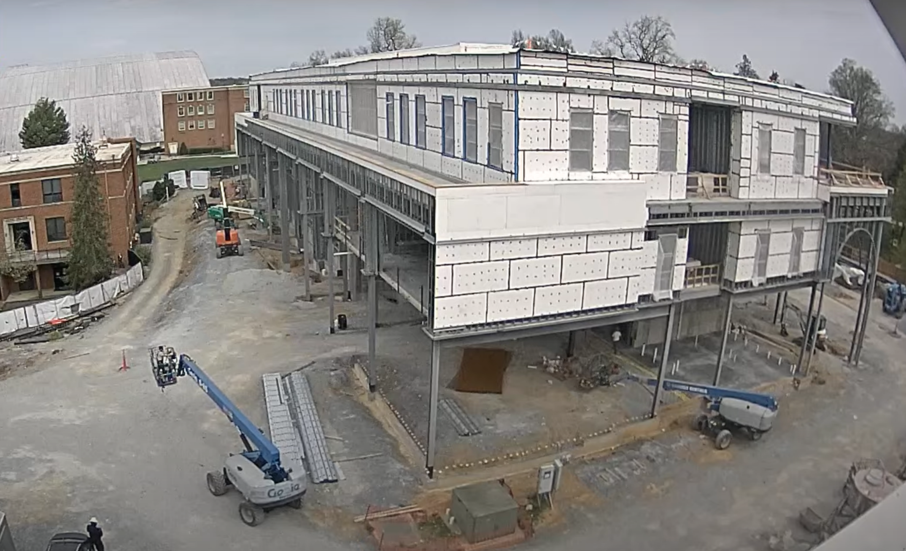

Entry 4.1
At 10:50 AM, five crew members were observed on site. The ground showed uneven coloration with several darker patches, indicating that it had rained earlier. The site was mostly clear, except for two cones and a pile of material located to the left of the building. Five machines were present, including two positioned at the back left of the site, however they were not currently in use. One crew member was seen loading the blue boom lift with what appeared to be metal framing. He was then lifted to the second floor, with the boom lift being adjusted a few times during the process, which took approximately three minutes. While he worked from the outside of the building, another crew member inside assisted by guiding the metal framing into place on the second floor. Entry 4.2
At 10:58 AM, two crew members were observed in the boom lift basket as it was raised closer to the framework of the second-floor ceiling. They began performing work on the ceiling. While this was underway, the boom lift on the right side of the site began reversing and maneuvered beneath the building which took approximately six minutes. Once positioned, it began ceiling work on the first floor. At 11:16 AM, the green lift on the right began operating along the side of the building that is not visible to the camera, while a compact track loader passed through the site to collect additional materials. By 11:20 AM, the boom lift that had been working on the first-floor ceiling completed its inspection and began returning to its original location. The return trip took six minutes, making the total cycle time for that task approximately 16 minutes, with a 12 minute drive time.
Entry 4.3
At 11:29 AM, a telescopic handler forklift was observed on the left side of the site, carrying a waste container. It traveled along the left side of the road leading to the rear of the building, where visible tire marks suggest this is a common route for equipment movement. The drive to the back took approximately two minutes. Once it reached the back, the forklift lifted the waste container to the second floor before returning to the ground at 11:35 AM. It then drove off camera but reappeared at 11:40 AM. The total cycle time for this material disposal operation was approximately 11 minutes from start to finish.

Entry 4.4
At 11:50 AM, the boom lift on the second floor completed the installation of additional wall panels. Shortly after, at 11:54 AM, the lift working on the first-floor ceiling returned to the ground. The cycle time for installing that section of wall panels was approximately one hour, while the ceiling work took about 28 minutes. By 12:00 PM, activity on site had decreased, likely due to the crew taking a lunch break. Work resumed at 12:27 PM, with the first-floor ceiling crew restarting their tasks, followed by the second floor wall panel crew at 12:38 PM.
